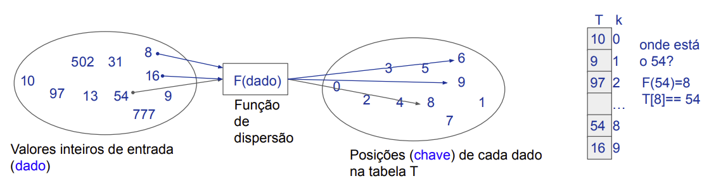
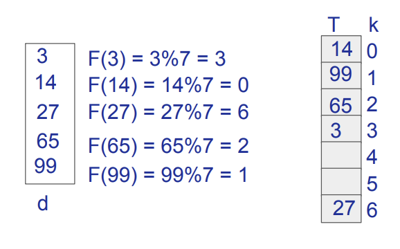
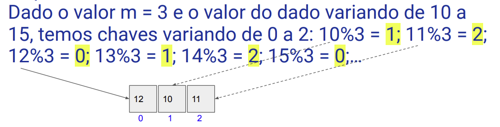
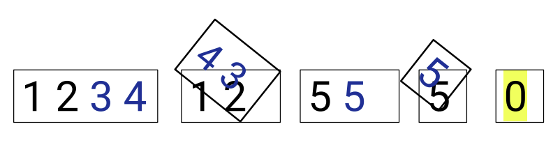

Disciplinas
-
ESTRUTURA DE DADOS-T01-2024-1 Concluído
Materiais
Vídeo 1 - [UFMS Digital] Estrutura de Dados - Módulo 1 - Unidade 1 - Parte 1. sendProf° ministrante: Dr. Jonathan de Andrade Silva.
Conteúdo
Tabelas de Dispersão: Hash.
Conceitos e Definições.
PARTE 1Motivação
- Imagine que gostaríamos de armazenar um conjunto de valores inteiros na memória do computador.
- Ex: 10 valores inteiros que variam de 0 até 999 (dado).
- Estratégias:
- Usar vetor com 10 ou 1000 posições (chave)?(Algoritmos 1)
- Lista encadeada? (Algoritmos 2)
Valores inteiros de entrada (dados)
Estrutura de Dados Lineares.
- Estratégia: Usar vetor com 10 posições (N=10).
- Vamos considerar a posição como chave;
- 0 ≤ chave ≤ 9 e 0 ≤ dado ≤ 999.
tem o dado 54?
0 1 2 3 4 5 6 7 8 9 🢂 Índice
10 502 31 97 8 16 777 9 13 54 🢂 Valor
- Estratégia: Usar vetor com 10 posições.
- Custo da inserção: O(1)
- Custo de buscar um valor: O(N)
- Só funciona para até 10 valores (fixo)!
tem o dado 54?
0 1 2 3 4 5 6 7 8 9 🢂 Índice
10 502 31 97 8 16 777 9 13 54 🢂 Valor
- Estratégia: Lista encadeada.
- Custo da inserção: O(1)
- Custo de buscar um valor O(N)
- Armazenamento sob demanda!
tem o dado 54?
0xFF01 0xFF02 0xFF03 0xFF04 0xFF05 0xFF6 0xFF7 0xFF8 0xFF9 0xFFA 🢂 Endereço.
10 8 9 13 16 31 54 97 502 777 🢂 Índice.
OxFF9 OxFF05 OxFF04 OxFF07 OxFFA OxFF8 NONE OxFF02 OxFF6 OxFF03 🢂 Próximo endereço.
🡻 🡻
início fim
- Resumo:
- Melhoramos o custo da busca, mas pioramos o custo de armazenamento;
- Resolvemos o problema de tamanho fixo, porém o custo da busca ainda está O(N);
- Tem como melhorar o armazenamento e ter custo O(1) na busca?
Tabela de Dispersão (Hash Table).
- Encontrar no dado algo significante para determinar sua posição (chave) ;
- Método de pesquisa com o objetivo de melhorar o custo da busca de um dado;
- Se baseia na importante característica dos vetores que permitem acesso direto aos dados;
- Ideia: associar (função de dispersão) cada chave a um valor na tabela (memória).
Tabela de Dispersão (definições).
- Vamos definir então as variáveis da tabela de dispersão:
- d (dado), podendo ser de qualquer tipo: string, float, objeto, matriz, etc.;
- k (chave/posição na tabela) valores inteiros de 0 até M-1;
- T (vetor/tabela) e M é o tamanho da tabela (idealmente um número primo);
- v (valor/dado) armazenado na tabela;
- F (função de dispersão).
Ideia: associar (função de dispersão) cada chave a um valor na tabela (memória). F(d)=k; T[k] = d.
- Podemos ter funções perfeitas e imperfeitas;
- Difícil encontrar funçõe s perfeitas em prática.
Função de Dispersão.
- O que se espera de uma boa função de dispersão?
- Seja rápido calcular a chave para um dado e rápido acessar a chave na Tabela, custo O(1);
- Distribua (disperse ) igualmente os dados na tabela;
- Capture no dado alguma informação que seja relevante para obter uma chave única;
- O que seria ruim para uma função de dispersão?
- Custo alto de cálculo > O(N);
- Para cada chave ter associado mais de um dado (problema conhecido como colisão).
Mas como funciona para strings?
- Associar um valor para cada caracter da string (Tabela ASCII);
- Somar os valores de cada caractere para obter o dado numérico.
Criando Funções de Dispersão.
- A mais clássica função de dispersão é usar a fórmula do resto da divisão (mod ou %) também conhecido como método da divisão , dado % m, m é um número inteiro maior que zero.
- Ex: o resto da divisão de 5 por 4 é representado como
F(dado) = dado % m
Qual deve ser o valor de m ?
que tal o tamanho da Tabela.
F(dado) = dado % M
Função de Dispersão (divisão).
Dada uma tabela M=7 para inserir 5 valores inteiros de 0 a 99. F(dado) = dado % 7.
- Impacto da escolha de m: F(dado) = dado % m.
- A ideia é simular a caminhada em uma estrutura linear de maneira circular.
Exemplo:
- E se o valor de m for muito pequeno?
- Vão ocorrer muitas colisões.
- Impacto da escolha de m: F(dado) = dado % m.
- Vamos observar a distribuição dos dados (10,...,15) nas chaves:

- Se tenho valores de 10 a 15 e uso um m (par).
- exemplo:
- m=2, quantas colisões ocorrem?
- Teremos TODOS os valores pares associados a chave 0 (4 colisões)
- Se tenho valores de 10 a 15 e uso um m (par).
- exemplo:
- m=4, quantas colisões ocorrem?
- Teremos TODOS os valores pares distribuídos nas chaves pares (0 e 2), 2 colisões.
- Se tenho valores de 10 a 15 e uso um m (ímpar/primo)
- exemplo:
- m=3, quantas colisões ocorrem?
- Teremos os valores pares e ímpares associados a uma mesma chave (3 colisões).
Função de Dispersão (multiplicação).
- Ideia: usar os valores fracionados de uma multiplicação para determinar a posição da chave;
- Utiliza outra constante A, tal que 0 < A < 1;
- Fórmula: F(d) = m*(d *A % 1) ou F(d) = M*(d *A % 1);
- O termo %1 serve para pegar apenas a parte fracionária da multiplicação (d *A).
Função de Dispersão (dobra).
- Dobrar o dado como se dobra um papel;
- Ideia: quebrar o dado em partes (dobrar e somar) até que se tenha a posição válida (chave) para a tabela de tamanho M;
- Exemplo: encontrar a posição para o dado 1234 sendo M=2 (tabela com 2 posições).
1234 -> unidade(1+4) unidade(2+3)= 55>2 -> unidade(5+5) = 0<2
Função de Dispersão.
- O desempenho é medido pelo número de colisões;
- Pode ser estimado pelo fator de carga (fc): quantidade de chaves / M;
- Em geral, as colisões ocorrem quando a distribuição das chaves é desigual ou quando a tabela tem tamanho pequeno;
- Estratégias para lidar com as colisões se fazem necessárias, vamos conhecer algumas delas.
Referências.
- SZWARCFITER, Jayme Luiz; MARKENZON, Lilian.
- Estruturas de dados e seus algoritmos. 3. ed. Rio de Janeiro, RJ: LTC, 2010. ISBN 9788521629955.
- CORMEN, Thomas. Algoritmos: teoria e prática. Rio de Janeiro: GEN LTC, 2013. ISBN 9788595158092.